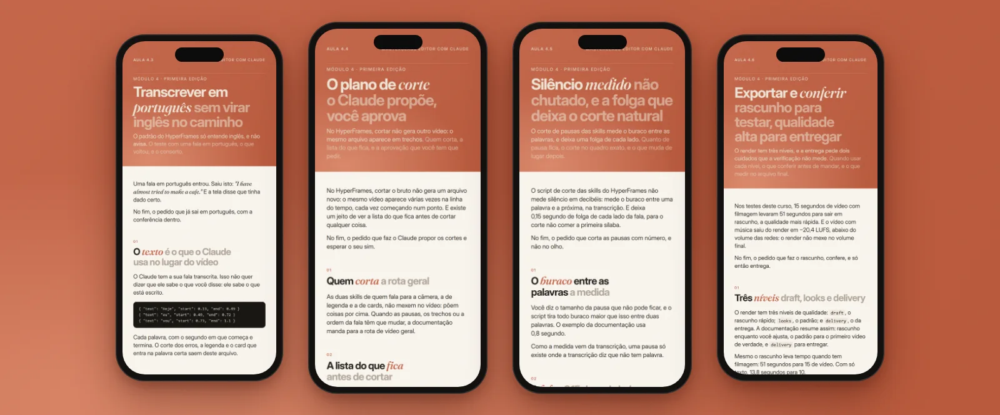
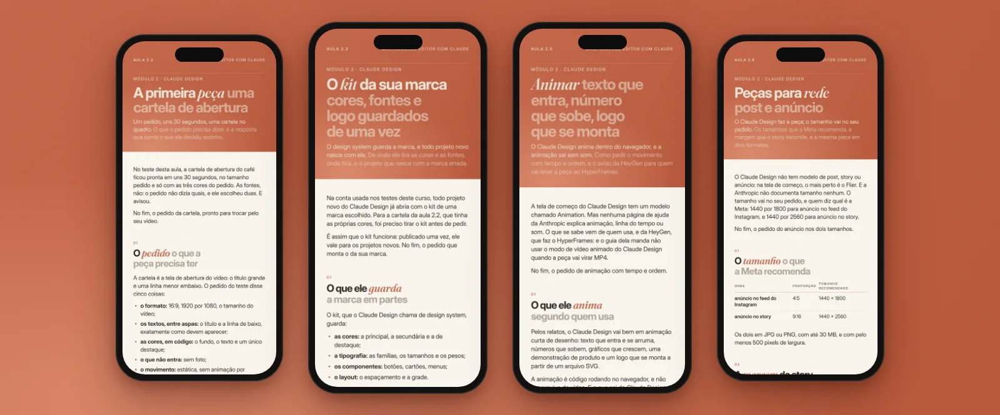
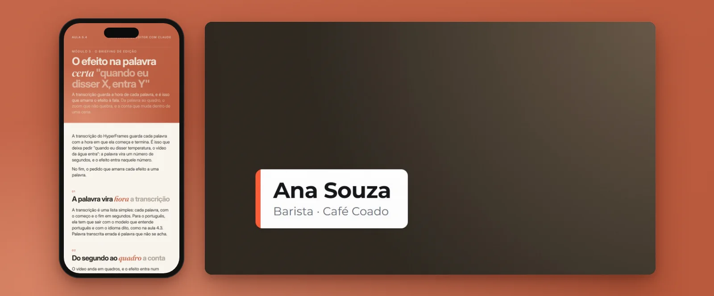
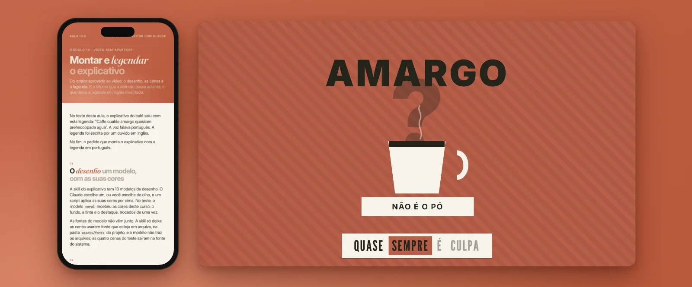
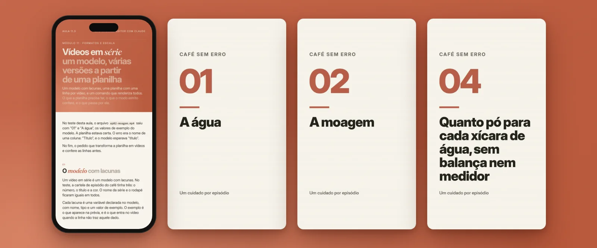
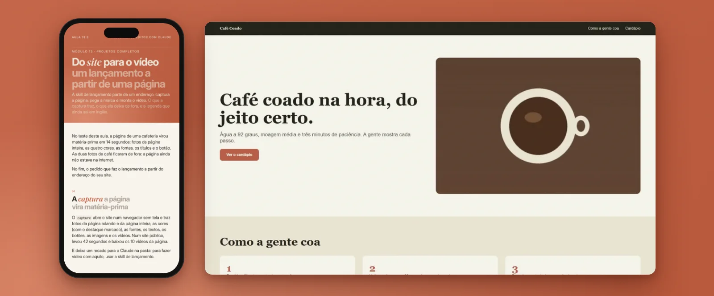
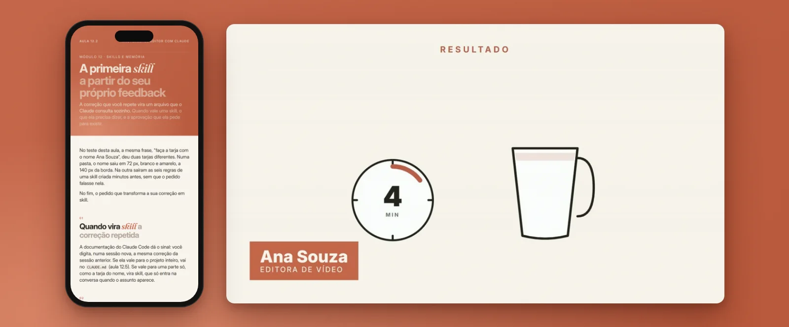

O que você vai fazer
O que um bom pedido faz,
do primeiro vídeo à sua esteira da semana.
Oito coisas que as aulas ensinam a fazer,
com o pedido pronto para colar. As imagens são das próprias aulas: a página do PDF e, ao
lado, o que saiu do teste.
01
O primeiro vídeo, só com um pedido
Você descreve o que quer ver. O Claude escreve a edição num arquivo, na
mesma linguagem das páginas de internet, e o HyperFrames transforma esse arquivo num MP4.
No computador do curso, instalar o HyperFrames pedindo ao Claude levou
cerca de um minuto. O primeiro vídeo, de dez segundos, sai no mesmo módulo.

02
Cortar erros, pausas e silêncios
O Claude propõe o plano de corte e você aprova antes de ele mexer no vídeo.
A pausa é medida na transcrição, com uma folga de cada lado para o corte não comer a
primeira sílaba.
Depois, o rascunho para testar, a qualidade alta para entregar e o que
levar para o CapCut, se você quiser terminar no seu editor.

03
Peças da sua marca, sem instalar nada
No Claude Design, dentro do navegador: cartela de abertura, texto que
entra, número que sobe e logo que se monta. As cores, as fontes e o logo da sua marca
ficam guardados de uma vez.
No teste, a cartela de abertura ficou pronta em uns 30 segundos. Depois as
peças vão para cima da sua gravação: abertura, nome na tela e encerramento.

04
Texto na tela, no segundo certo
O Claude não assiste ao seu vídeo: ele lê a sua fala, palavra por palavra,
com o segundo de cada uma. Por isso o pedido que funciona é “quando eu disser X,
entra Y”.
E o texto que dá para ler: tamanho, tempo, contraste e lugar. O catálogo
tem 387 peças prontas, de transição a nome na tela, chamadas pelo nome.

05
Vídeo explicativo, sem aparecer
Do seu texto sai o roteiro, uma ideia por cena. A voz é escolhida e fixada
em português, e é ela que decide quanto o vídeo dura.
O explicativo sai montado e legendado. A aula mostra o erro que deixou a
legenda do teste em inglês inventado, e o pedido que conserta.

06
Uma série inteira a partir de uma planilha
Um modelo com lacunas e uma planilha com uma linha por vídeo: um comando
renderiza todos. E de um vídeo longo saem vários Reels.
O título, a descrição e a capa saem da transcrição do próprio vídeo. E tem o
vídeo na batida da música, com fotos e cortes no tempo certo.

07
Do site para o vídeo
A skill de lançamento parte de um endereço: captura a página, pega a marca
e monta o vídeo. A aula mostra o que a captura traz e o que ela deixa de fora.
No mesmo módulo: videoaula com cards e legenda, vídeo de produto com as
peças da sua marca e a sua esteira da semana.

08
O Claude lembrar do seu jeito
A correção que você repete vira uma skill: um arquivo que o Claude consulta
sozinho. A primeira sai do seu próprio feedback; outra, de um vídeo que você admira.
E o CLAUDE.md e a memória: o que você escreve, o que o Claude anota, e onde
cada um fica entre uma conversa e outra.